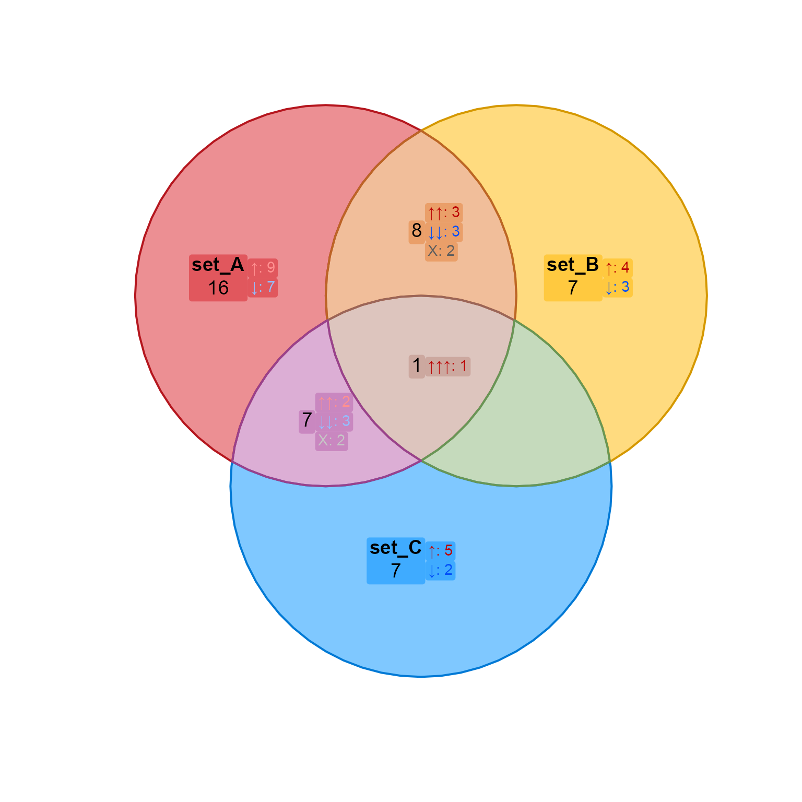
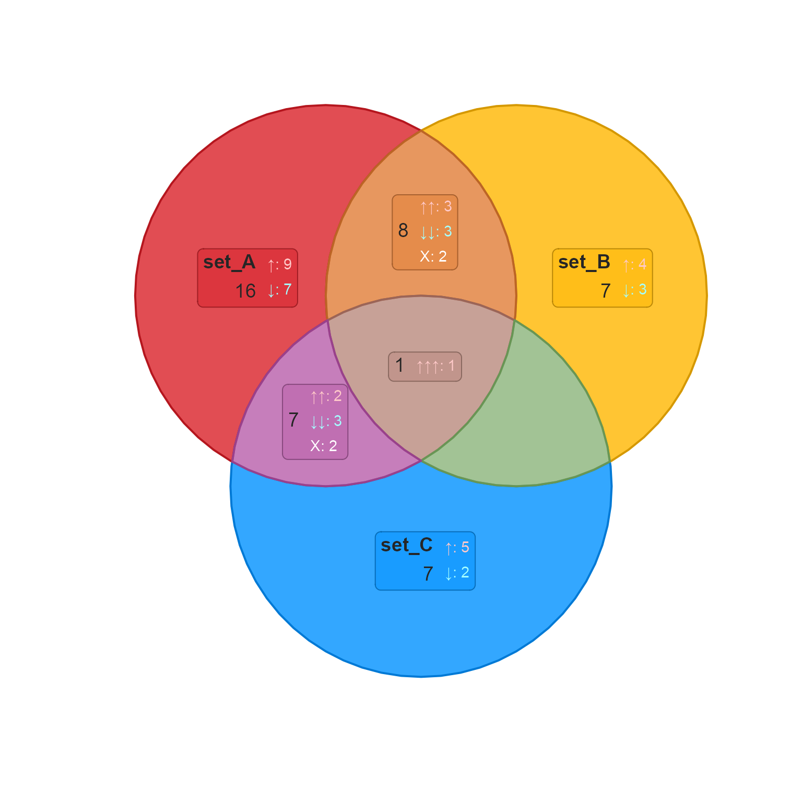
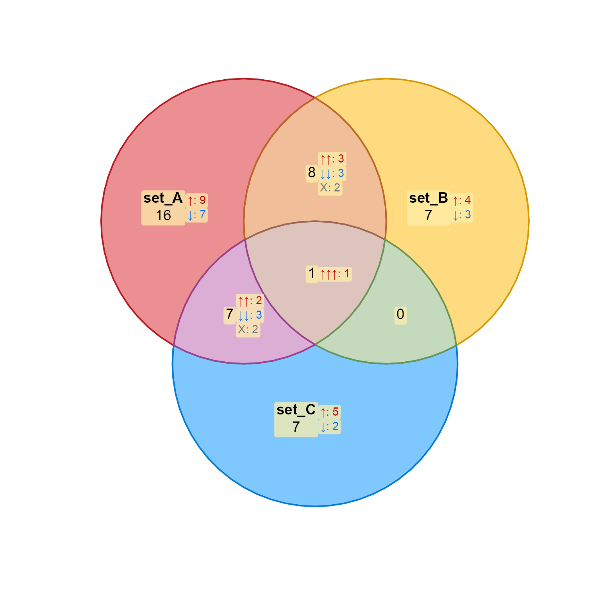
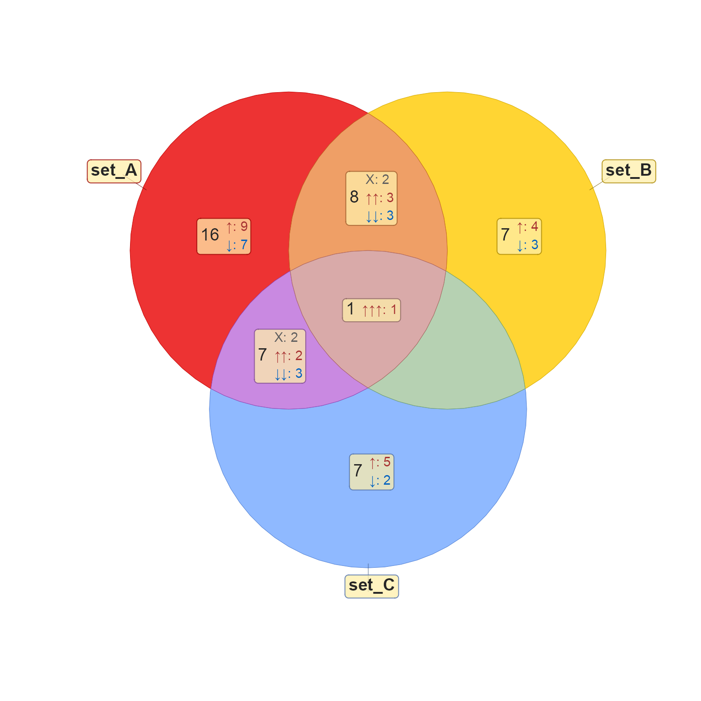
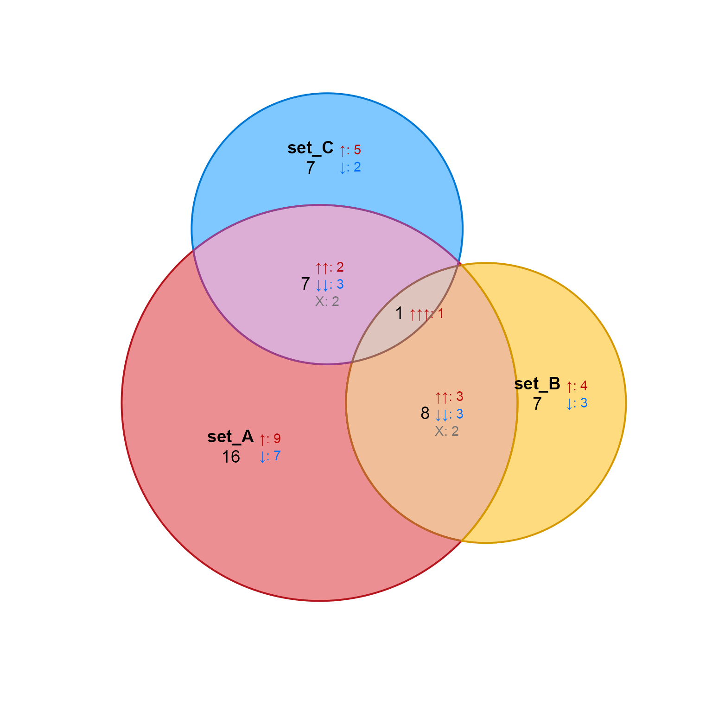
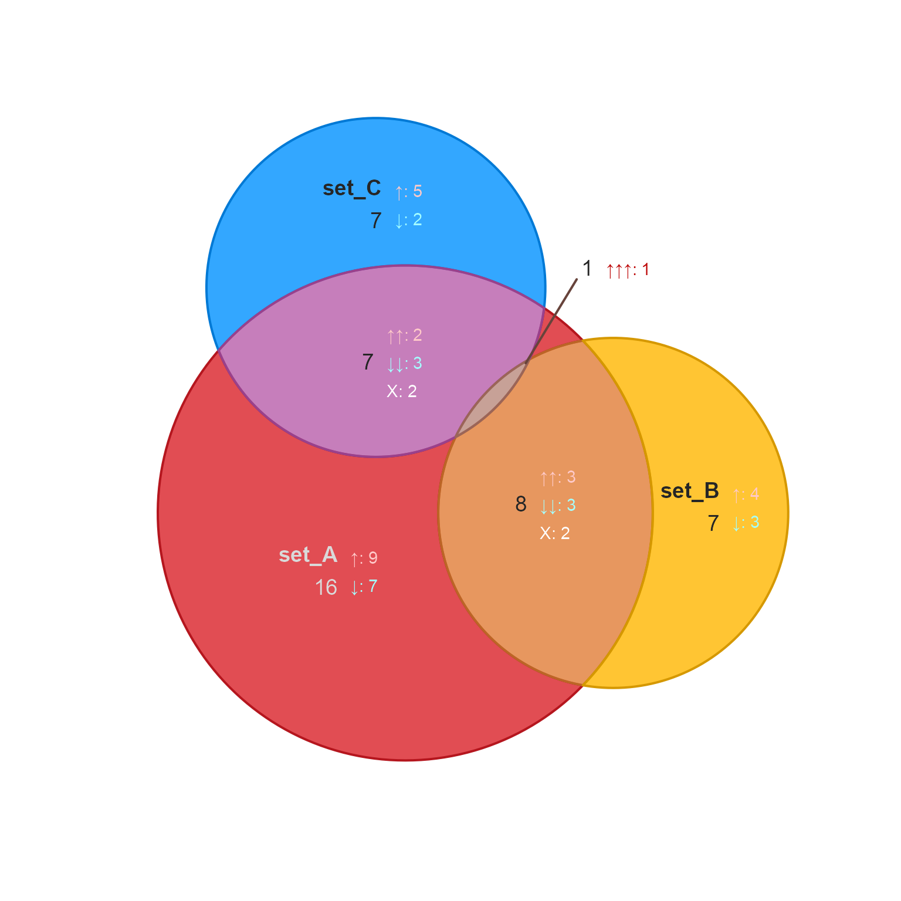
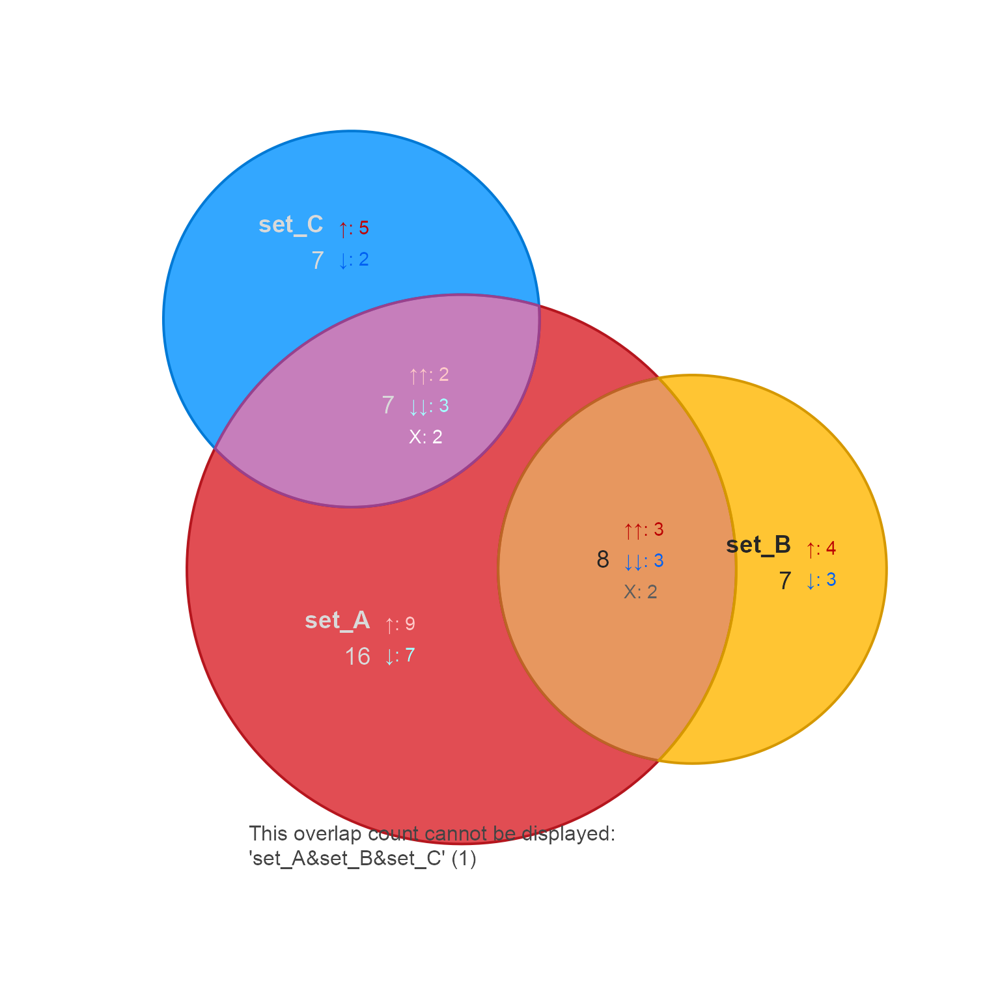
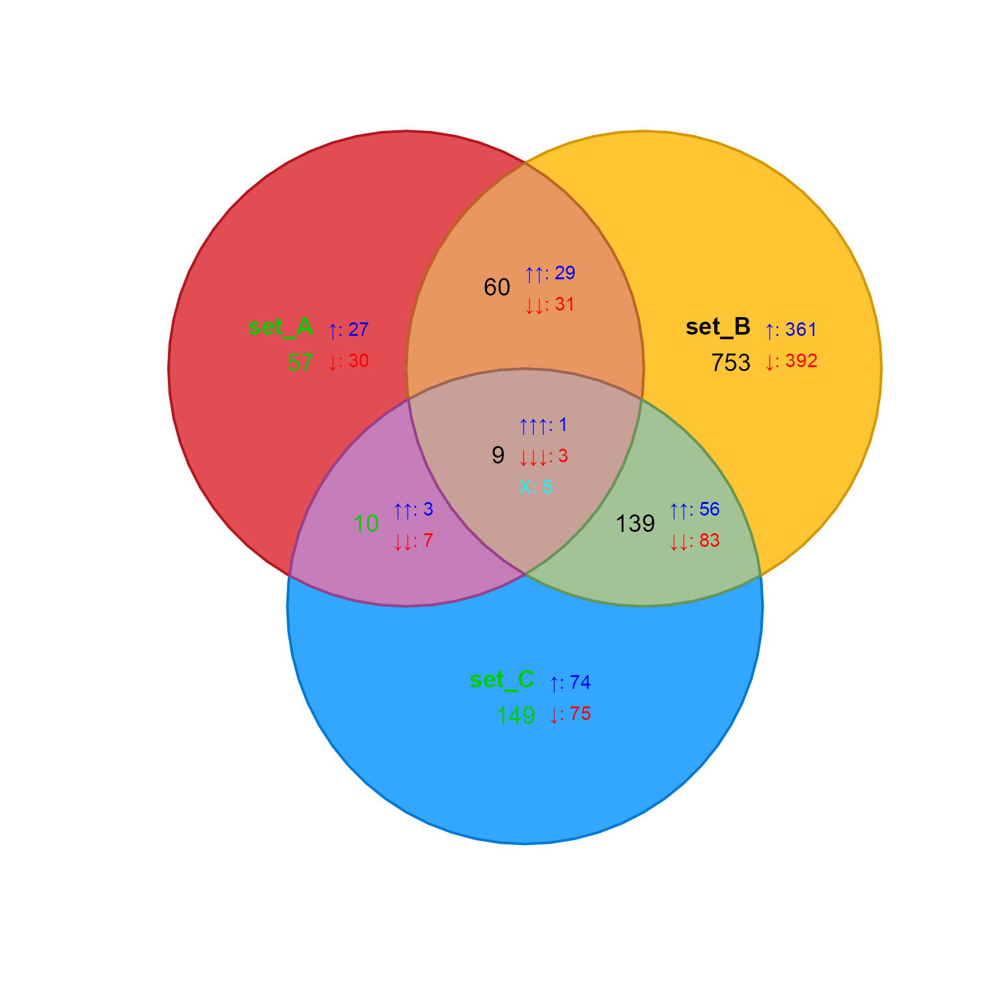
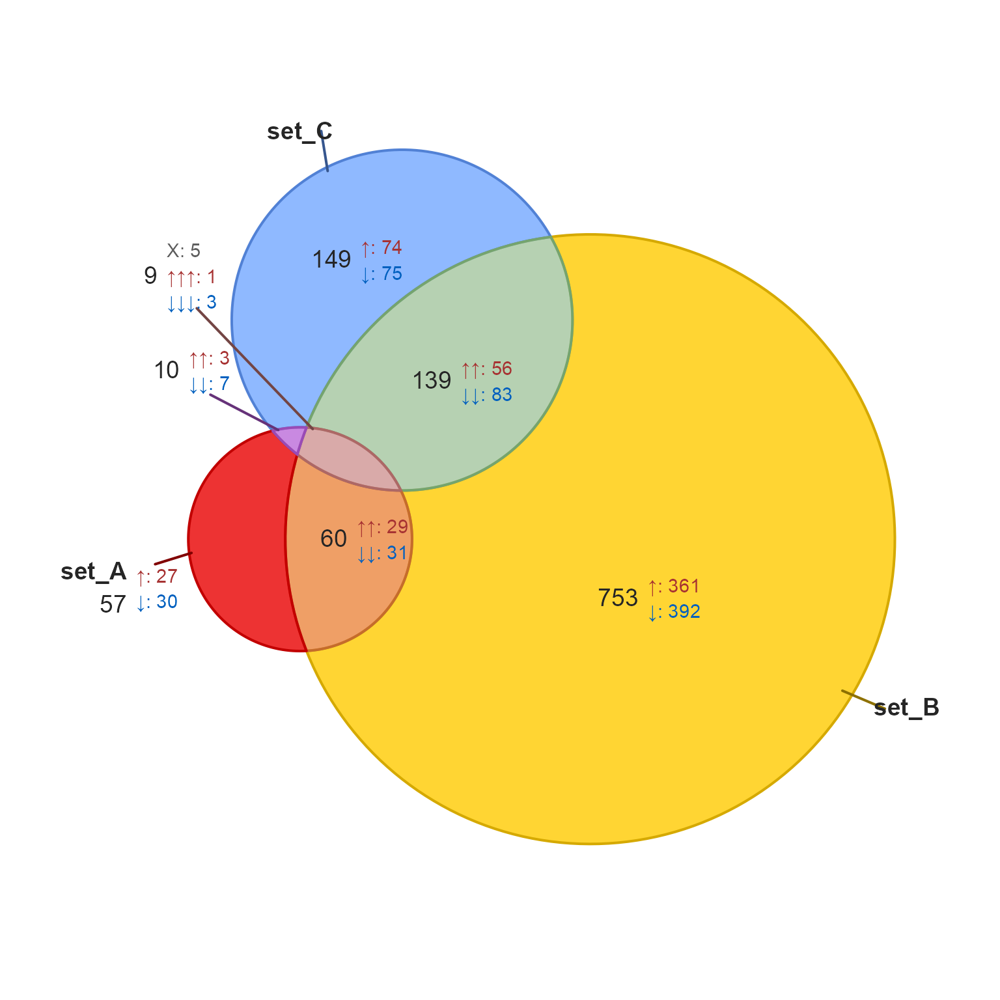
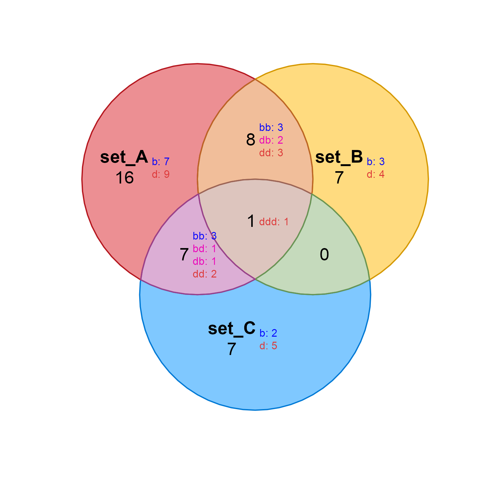

Directional Venn diagram
venndir( setlist, overlap_type = c("concordance", "each", "overlap", "agreement"), sets = NULL, set_colors = NULL, proportional = FALSE, return_items = FALSE, show_set = c("main", "all", "none"), show_label = NA, show_items = c(NA, "none", "sign item", "sign", "item"), max_items = 3000, display_counts = TRUE, show_zero = FALSE, font_cex = c(1, 0.8), poly_alpha = 0.8, alpha_by_counts = FALSE, label_style = c("basic", "fill", "shaded", "shaded_box", "lite", "lite_box"), circle_nudge = NULL, rotate_degrees = 0, unicode = TRUE, big.mark = ",", sep = "&", curate_df = NULL, venn_sp = NULL, inside_percent_threshold = NULL, plot_style = c("base", "gg"), do_plot = TRUE, verbose = FALSE, ... )
Arguments
| setlist |
|
|---|---|
| overlap_type |
|
| sets |
|
| set_colors |
|
| proportional |
|
| return_items |
|
| show_items |
|
| show_zero |
|
| font_cex |
|
| poly_alpha |
|
| alpha_by_counts |
|
| label_style |
|
| unicode |
|
| big.mark |
|
| sep |
|
| curate_df |
|
| venn_sp |
|
| inside_percent_threshold |
|
| plot_style |
|
| ... | additional arguments are passed to |
Details
This function displays a Venn diagram, or when proportional=TRUE
it displays a Euler diagram, representing counts in each overlap
set.
Input data is supplied either as a list or incidence matrix,
or signed incidence matrix (whose values indicate direction),
and is passed to signed_overlaps() to summarize counts by
Venn overlaps.
By default, when input data contains signed direction, the
counts include summary counts for the different forms of
agreement in direction. See signed_overlaps() for description
of each overlap_type, for different methods of summarizing
the overlapping directions.
Detailed workflow
In more detail, input setlist is named by set names, and each
vector contains items.
When the vector elements in setlist are not named,
the values are considered items. In this case, the values are all
defined as 1 for the purpose of defining overlaps, and
overlap_type is automatically set to overlap_type="overlap".
At this point the "sign" is no longer used.
When the vector elements in setlist are named, the
vector element names are considered items, and vector values
are considered the "sign".
For common scenarios, the "sign" is usually one of the
values c(-1, 1) to indicate "up" and "down". However,
the "sign" may contain any atomic value, including numeric,
integer, or character values for example.
The setlist data is passed to signed_overlaps() which
in turn calls list2im_signed(). At this point the incidence
matrix values represent the values from each vector in setlist.
For each item, the "sign" is defined as the concatenated signs
from each vector in setlist for that item. For example
the "sign" may be "1 1 -1", which indicates the item is
present in all three vectors of setlist, and is "up", "up",
"down" in these vectors. The sign "0 1 0" indicates an
item is present only in the second vector of setlist and
is "up".
Each item sign is curated by calling curate_venn_labels().
This function is used to convert "sign" to visual symbols,
for example "1" may be converted to a Unicode up arrow
"\u2191". Unicode output can be disabled with unicode=FALSE.
The same function converts "sign" to color, which can be
a helpful visual cue. This step can be customized to use
any output valid in R and recognized by gridtext::richtext_grob()
or ggtext::geom_richtext(). Specifically, it can contain
Unicode characters, or limited markdown format recognized
by these functions.
Display of Venn or Euler circles
The overlap counts are used to define suitable Venn circles
or ellipses when proportional=FALSE, or Euler proportional
circles when proportional=TRUE. This step is performed
by get_venn_shapes().
For Venn circles, the method allows 1, 2, or 3 sets.
For Venn ellipses, the method allows 4 or 5 sets.
For Euler circles, the method allows as many sets as are
supported by eulerr::euler().
In the event the circles or ellipses does not include
an overlap, a label is printed below the plot. See
render_venndir() and the argument plot_warning=TRUE.
For proportional Euler diagrams, even for 3-way diagrams
there are often missing overlaps, and this warning is
helpful to reinforce what is missing.
Adjusting Venn or Euler circles
As indicated above, when proportional=TRUE sometimes
the Euler circles do not represent all set overlaps.
It may be helpful to nudge one or more circles to
represent a missing overlap, using the argument
circle_nudge. This argument takes a list named
by one or more names(setlist), of vectors with c(x, y)
values to "nudge" that set circle.
Display of counts
By default, total counts are displayed for each set overlap.
When setlist contains signed data, count signs are summarized
and displayed beside the total counts. The
summary options are defined by overlap_type.
Count labels can be styled using label_style, which
customizes the background color fill and optional border.
Display of items
Displaying item labels inside the polygons can be a convenient
way to answer the question, "What are those shared items?"
This step can also include the "sign", showing which shared items
also have the same or different "sign" values.
Note that when items are displayed, summary counts are currently hidden. In future the counts may be positioned outside the polygons.
More customizations
This function actually calls render_venndir() to display the
diagram. The output from this function can be customized and
passed to render_venndir() or ggrender_venndir() to allow
much more customized options.
See also
Other venndir core:
render_venndir(),
signed_overlaps(),
textvenn()
Examples
#> $set_A #> [1] "item_067" "item_042" "item_050" "item_043" "item_014" "item_025" #> [7] "item_090" "item_091" "item_069" "item_093" "item_057" "item_009" #> [13] "item_072" "item_026" "item_007" "item_099" "item_089" "item_083" #> [19] "item_036" "item_078" "item_097" "item_076" "item_015" "item_032" #> [25] "item_086" "item_084" "item_041" "item_023" "item_027" "item_060" #> [31] "item_053" "item_079" #> #> $set_B #> [1] "item_053" "item_027" "item_096" "item_038" "item_089" "item_034" #> [7] "item_093" "item_069" "item_072" "item_076" "item_063" "item_013" #> [13] "item_082" "item_025" "item_097" "item_021" #> #> $set_C #> [1] "item_079" "item_041" "item_047" "item_090" "item_060" "item_095" #> [7] "item_016" "item_006" "item_072" "item_086" "item_091" "item_039" #> [13] "item_031" "item_081" "item_050" #>venndir(setlist)venndir(setlist)venndir(setlist, label_style="basic")venndir(setlist, label_style="fill")venndir(setlist, label_style="shaded")venndir(setlist, label_style="shaded_box")venndir(setlist, label_style="lite")venndir(setlist, label_style="lite_box")# proportional Euler diagram venndir(setlist, proportional=TRUE);# nudge circles and hide the zero venndir(setlist, proportional=TRUE, show_zero=FALSE, circle_nudge=list(set_C=c(-0.5, 0.1)) )# nudge circles so one overlap is no longer shown venndir(setlist, proportional=TRUE, show_zero=FALSE, circle_nudge=list(set_C=c(-1.4, 0.1)) )venndir(setlist2k, proportional=TRUE)# example using character values setlist <- make_venn_test(100, 3, do_signed=TRUE) # make a simple character vector list setlistv <- lapply(setlist, function(i){ j <- letters[i+3]; names(j) <- names(i); j; }); # make custom curate_df curate_df <- data.frame( from=c("b", "d"), sign=c("b", "d"), color=c("blue", "red"), stringsAsFactors=FALSE) vo <- venndir(setlistv, overlap_type="each", font_cex=c(1.5, 0.9), curate_df=curate_df, show_zero=TRUE);